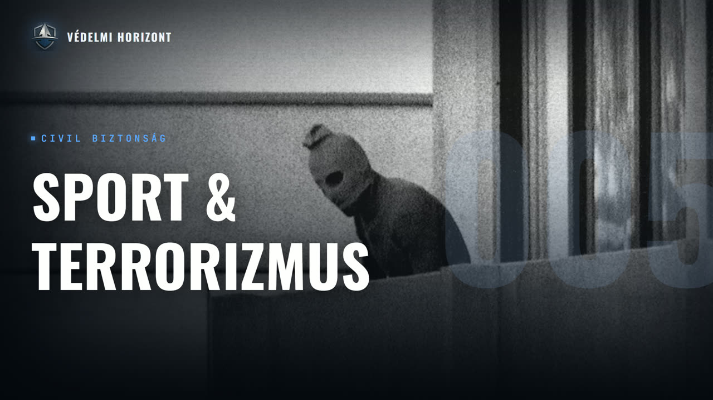

SPORT A CÉLKERESZTBEN - TERROR, DRÓNOK ÉS A BIZTONSÁG ÁRA

Leírás
Résztvevők: Zsebeházy Bálint, Marton Péter
Üdvözöljük a Védelmi Horizont kutatóműhely ötödik adásában!
Ebben az epizódban egyetlen kérdés köré szervezzük a beszélgetést: miért lett a sport a terrorizmus egyik legvonzóbb célpontja – és hogyan változott meg maga a fenyegetés az elmúlt évtizedekben? Abból indulunk ki, hogy a támadások valódi célpontja soha nem a sport maga, hanem a mögötte álló hatalmas közönség és nyilvánosság; innen jutunk el a terrorizmus fogalmi meghatározásáig és annak másodlagos, pszichológiai hatásáig. Felrajzoljuk a nagy események biztosításának történelmi vízválasztóját – az 1972-es müncheni olimpiát –, és azt, hogy azóta miként professzionalizálódott és privatizálódott az eseménybiztonság, illetve ki állja mindennek a költségeit. Végigjárjuk a terrorizmus és a média változó viszonyát a hagyományos sajtótól a közösségi médiáig és a viralitásig, majd a beszélgetés a legújabb technológiai kihívásokkal zárul: a drónokkal, a kibertámadásokkal és a mesterséges intelligenciával, amelyek egészen új kockázatokat hoznak a nagy sportesemények köré.
Leirat beszélőnként
Üdv mindenkinek! Ez itt a Védelmi Horizont. Az a podcast, ahol gazdasági, hadiipari és biztonságpolitikai szempontok alapján nézünk rá ugyanarra a témára, egyszerre, egy asztalnál. A nevem Zsebelzi Bálint, és most ketten ülünk a mikrofonnak vagy ott. Velem szemben Marton Péter, külpolitikai elemző, a budapesti Corvinus Egyetemi docense. Köszönjük, hogy elfogadta a meghívást.
Köszönöm és köszöntöm a hallgatóságot!
A mai adásban a sport és a terrorizmus kapcsolatát járjuk körbe. Miért vált a sport vonzó célponta a szélsőséges szervezetek számára? Hogyan használja ki a terrorizmus a nagy sportesemények globális média nyilvánosságát? És milyen új fenyegetésekkel, drónokkal, kibertámadásokkal, magánelkövetőkkel kell ma szembenéznie a biztonsági szolgálatoknak. Szó lesz arról, hogy hol húzódik a határ a politikai aktivizmus és a szélsőséges erőszak között a sport világában, és hogy a sport végső soron inkább célpontja, vagy éppen ellenszerre a terrorizmusnak. És akkor nézzük is a Kérdéseket én olyan kérdéssel indítanék, hogy tulajdonképpen miért vált a sport a terrorista szervezetek számára vonzó célpontá?
A sport, nem annyira a sport igazából önmagában a lényeges, ugye nagy eseményekhez szokott vezetni, tehát van az a része, amikor az ember magányosan egy hajnali órákban, hogy fit legyen, meg ugye a versenyzők, a versenyszport, a tűzők körében eljön az a pillanat, amikor megmérettetése ugye akár kifejezetten nagy közönség előtt sor kerülhet, és ez a lényeges, a közönség, tehát ez a terrorizmus definíciától indul tulajdonképpen, és onnétól nagyon jól érthető. Talán bele is megyek ebbe, és akkor úgy lesz kerekebb a válaszom. Szoktak olyat mondani, hogy a terrorizmus az nem definiálható, mert az egyik embernek a hős, az a másiknak a gonosz terrorista. Az az igazság, hogy az ember kutatóként mindent tud definiálni. Ez nem jelenti, hogy egy meghatározás az nem jár adott esetben valamifajta problémákkal, minden esetről könnyen eldönthető lesz, hogy megfelele annak a meghatározásnak vagy sem, de egy definíciót mondani, ne komoly talankodjunk, az mindenről lehet. Tehát a terrorizmus esetében ez úgy néz ki, a leginkább bevett definíció, hogy a terrorizmus az politikai indítatása, erőszak alkalmazása civilek ellenében. És ennek a definíciónak ez a három legfontosabb eleme olyan, hogy mindegyik kapcsán lehetne mondani problémákat is egyébként, tehát természetesen nem olyan értelemben tökéletes ez a definíció, ahogy előrejeleztem, hogy Mindenfajta továbbgondolástól mentesen haladhatunk előre. Viszont van még egy definíciós elem, ami nagyon fontos, és ez a terrorizmusnak a stratégiájához kapcsolódik, tehát hogy hogyan tud egy adott cél szolgálatában eszközként működni legalábbis az eredeti elképzelés szerint, ami az elkövetők fejében létezik, aztán vagy úgy működik, vagy nem. Tényleg, hogy próbálnak egy másodlagos hatást kifejteni, nem egy célpont megsemmisítésén, egy célpontnak az ártalom okozásán keresztül próbáljanak közvetlenül elérni csak dolgokat, bár sokszor azzal is el tudnak érni valamit. Hanem egy nagyobb közönségre, egy akár az esemény kapcsán közvetlen jelen sem lévő közönségre is igyekeznek hatást gyakorolni, pszichológiai hatást. Ugye klasszikus esetben ez a félelem kiváltása, de számos egyéb fajta érzelem is keletkezhet. Pánikhangulat, teljes bizalomhiány például intézmények működésével kapcsolatban. Tehát ilyen dolgokra törekszik felforgató tevékenységként adott esetben a terrorizmus. És amikor egy nagy sporteseményt megtámadnak, akkor nagyon könnyű elérni egy nagyobb közönséget és kifejteni ezt a pszichológiai hatást.
Akkor tulajdonképpen azt így kijelenthetjük, hogy nem magával a sporttal van baja a terroristáknak, hanem ez a nézőközönség ellenirányul, úgymond a nyilvánossága adja meg ezt a fajta célpontot.
Igen, szerintem ez egy abszolút szerencsés megfogalmazás, bár aki akarja, most ezt nyugodtan tesztelje, hogy beírja a chat GPT-be, hogy tud-e találni olyan példát, ahol az adott elkövetőnek kifejezetten a sporttal volt a baja. Nekem hirtelen most nem jut eszembe ilyen. De hogy végigpörgetem a fejemben a releváns példákat, ott ott inkább az a jellemző, hogy a sport az csak egy ilyen praktikus közeg egyéb dolgoknak a kinyilvánításához. Nem is feltétlenül konkrétan a sport, hanem úgy általában a nagy események, amik sok embert vonzanak, ahol ott van a média jelenléte. Tehát eleve nagyon könnyű a figyelmet megszerezni, mert hogy a figyelem infrastruktúrájaként a média jelenlét ugye ott van. És hát ezen túlmenően mondjuk ami eszembe jut, hogy adott esetben maga a sport intézménye lehet például olyan, ami valamilyen módon közvetve szülhet bizonyos gondolatokat. Mondjuk az Eric Rudolphnak a példája jut eszembe az Egyesült Államokból. Ő volt az atlantai olimpián is, robbantásokat elkövetett, egyébként számos más incidensért felelős elkövető, akinek egy ilyen szélső jobboldali, vallásos, indítatású világlátása volt, és ehhez kapcsolódóan ő úgy gondolta az olimpiára, mint ami bevételt hoz a szövetségi kormányzatnak. És hogy ő ezt a bevételt is pusztítani szerette volna azzal, hogy megzavarja az olimpiai játékokat, tehát ez része volt az ő nagy T-betűs tervének.
De hogyha már ilyen történelmi esetekre elkezdtünk kitérni, akkor tulajdonképpen nézzünk is rá arra, hogy mióta olyan fontos ez, hogy a sport és a terrorizmus kapcsolata Gondolom azért nem a világtörténelem egészében volt ez olyan kiemelten fontos. Tehát hogy milyen ilyen kronológiai pontokat tudunk letenni, hogy mikor kezdtünk el foglalkozni ezzel a fajta kapcsolattal. Mondjuk mikor kezdtek el az államok.
Mindenképpen a 72-es Müncheni olimpia egy nagyon-nagyon fontos vízválasztó. Egyébként még azért folytatnám egy kicsit az előző válaszokból a következő diskurzust, hogy szépen megágyazzak ennek. Volt ugye például a terrorizmus történetéről egy olyan periodizáció egy Rappaport nevű kutatótól, Amelyik egyébként vitatható a maga egyes elemeiben, de szóval körülbelül az 1880-as évektől kezdődően írja fel nekünk a terrorizmus nagy hullámait, kezdve az anarchista terrorizmus hullámával, és hogyha belegondolunk ebből a periodizációval, miért akkor kezdődik, miért nem mondjuk az ókori görögöknél, ahogy szeretjük általában kezdeni a dolgokat, Az indoklás explicit módon szerepel a repoporttól, tehát hogy például a távíró infrastruktúra adottsága az már egy közel valós idejű tudósítást tett lehetővé különböző eseményekről a világban, tehát így messzire és viszonylag gyorsan eljuthatott a híre. Az olyan radikális lépéseknek, mint az anarhisták robbantgatásai például, és hát ilyen módon nagyobb fokú hatást tudtak kiváltani. És hát persze, ha az 1880-as évektől indulok, akkor eljutni 1972-ig az egy elég hosszú idő. Gyanús, hogy ha nagyon kapirgálunk, akkor találhatunk ezt-azt, mert milyen sok sportesemény lehetett abban a köztes időben is. De ami Münchenben történt, azért az egy más szintre emelte a dolgokat, és ott ez annyira átütőrei volt, hogy a sportesemények, illetve általában a nagy események biztosításának a teljes újragondolását hozta el. Münchenben tényleg a felkészültség az körülbelül arra irányult, hogy ne lehessen jegynélkül megnézni sporteseményeket, Hamisított jegyjel bejutni, ilyen dolgokra igyekeztek figyelni. És hát főleg, ahogy ezt szeretem mondani, egy ilyen tornából nem felmentett egyénekre volt bízva, hogy megállítsák azt, aki mondjuk túlzottan ittasan érkezik egy adott helyszínre, és még nem tudna úgy viselkedni, hogy a sportesemény zavartalan lebonyolítással az biztosított legyen. De hát ennél komolyabb kívásokra nem feltétlenül gondoltak. És akkor egyszer csak összetalálkoztak ugye a Fekete Szeptember csoportosulással, amelyik a felelős volt azért az akcióért. Persze tágabb hálózatok, messzebbre jövő hálózatok részeként, akik hát egy kicsit komolyabban felkészültek a maguk oldaláról erre az eseményre, és ez igen sok halálos áldozattal járt. És hát innentől történik az, hogy nagyon gondosan kialakításra kerülnek ilyen biztonsági zónák a különböző helyszínek körül. Van egy külső zóna, ami már valamennyire ellenőrzött, egy belső zóna, ami nagyon-nagyon ellenőrzött. A ki-be mozgásokat nyilván nagyon tudni kell figyelni. Megfelelő jogosultsággal lehet csak mozogni ezeken a határokon keresztül. Minden tekintetben gondoskodni kell erről. És hát ez ugye az, ami ma lényegében nem feltétlenül változott, de ezer új kihívással jár, mert most már a biztonsági zónákról a kibertérben is kell gondolkodni, illetve amikor ki-be mozgásokat veszünk számba, hogy mik lehetnek, akkor hát mint az a félvezetőben elhangzott, még a drónok röpködése is ott van.
És most, hogy ugye itt elkezdtünk beszélni kihívásokról, meg intézkedésekről, protokollokról, de ez nyilván, ez költségekkel jár, ugye? Felmerül az állam részéről, vagy az önkormányzat részéről, vagy a klubok részéről, de ugyanúgy egyébként a nézők is úgymond egyik költséget fizetnek, amikor nekik is idejükbe telik átmenni a kapukon, meg ott Nem tudom, biztonsági átvilágításokon lenni. Ezeket a költségeket tulajdonképpen kiállja ezeknél az eseményeknél? Az állam, önkormányzat, a maga a focista, nem tudom, szövetségek vagy sportszövetségek, ez hogy működik pontosan?
Erről fantasztikusakat lehet vitatkozni, örre menő módon. Mindenki jöhet a maga módján, amellett élvelve, hogy nekem köszönhetitek, hogy üzletetek lesz, és kérem a nyereségből a részemet, de hát a végén meg mindenkinek hozzá is kell járulnia az egészhez így vagy úgy, úgyhogy hát meg kell osztozni rajta valahogy. Érdemes ezt tanulmányozni esetről esetre, hogy hogyan működik, Ugye ez tükrözi az egyes szereplők alkupozícióját. Nem feltétlenül az észérvek döntik el a vitát, hanem sokkal inkább az, hogy például egy brennek ez a nem kézzelfogható értéke mekkora, hogy a FIFA viszi oda a foci WB-t valahová, akkor Tehát ez egy olyan esemény, aminek nyilván nagyobb a súlya, mintha most én szerveznék egy házi focibajnokságot, és akkor ez onnéttól megteremtően maga súlyát ad az érv, hogy hát mi vagyunk itt, és akkor nekünk fizessetek, és nem mi fizetünk nektek. Pedig adott esetben lehetne a másik verzió mellett is érvelni, csak hát az adott helyzetben nem abba az irányba dől el a vita.
Talán ez is érdekes lehet egyébként, hogy mennyire az államnak a rendfertartóerői jelennek meg az ilyen eseményeken, mondjuk rendőrség, nem tudom, terrorelhárítás vagy hasonlók, vagy pedig civil, vagy hát úgymond privát cégek egyébként.
Igen, a biztonságprivatizációja az egy nagyon izgalmas téma. Valószínűleg önmagában megér egy podcastet akár. Tehát itt ez egy olyan jelenség, ami a globalizációval együtt egy ilyen határokon átnyúló formában is megjelent. Tehát a nagy sportesemények azok garantáltan határokon átnyúló módon mennek végbe. Egy ilyen foci vőből például, amire most ránézünk, ami három országban zajlik egyszerre, az is garantáltan ilyen. Tehát ahhoz, hogy megfelelően össze legyen fogva a biztonsági kihívások kezelése valószínűleg jó is, ha van valamifajta saját biztonsági háttere az eseménynek. Akár egy egységes csapat, amelyik foglalkozik legalább a feladatok egy részével. De hát az, hogy mindenfajta szerződő kontraktorfelek szerepet kapnak, magánbiztonsági cégek szerepet kapnak helyszínek biztosításában például, ez enélkül nehéz igazából elképzelni, hogy mehetne ma végbe egy ilyen esemény.
Tehát a médiának és a terrorizmusnak a szerepének egyébként most azt gondolom, hogy látszódik egyfajta megváltozása, hogy a közösségi média is belép a képbe. Tehát mik egyébként a terrorizmusnak és a hagyományos médiának a kapcsolata és miben változtat ezen a social media, főleg így a sport terén mondjuk?
Ez egy érdekes kérdés, ez messze túl visz a sport kontextusán. Szóval hát nyilván a hagyományos média volt a leghatékonyabb eszköz a figyelem megszerzésére hagyományosan. És egy esetet említenék akkor konkrétan ennek az illusztrálására, volt a Ted Kaczynski, aki egy ilyen magányos farkas terrorista volt. Az első tálmokban úgy is emlegették, hogy Unabomber, University and Airline Bomber, mert hogy mindenféle egyetemi kutatóhelyeket is, de például utasszállítórepülőgépet is célba vett, különféle támadásai és támadási kísérletei során, amiket főleg levélbombákkal, tehát postai küldeményben rejtett robbanószerkezettel vitvékhez. Meg egyébként teljesen más célpontok is. Szóval a Unabomber a kezdettől nyomozatilag összekapcsolt eseményekből adódott így megnevezésként számára. De egyébként más célpontokat is támadott. És tehát az ő esetében érdekesen alakult az ő egyéni fejlődés útja, ha lehet ilyenről beszélni. Elég sokáig volt aktív. Szabadlábon tevékenykedő terrorista, úgyhogy egy elég hosszú útat járt be, és hát a vége felé nagyon-nagyon szerette volna a gondolatait megosztani a világgal, és ehhez megírta maga kiáltványát. És akkor elkezdett tárgyalni a hagyományos médiával, hogy megjelenhessenek az ő szavai, és sokak elolvashassák azokat. És megkereste a New York Times-t, meg a Washington Post-ot, és gyakorlatilag zsarolt, tehát azt mondta, hogy ha nem hozzátok le a kiadványomat, akkor további támadásokat hajtok végre, nem állok le. Ha lehozzátok, akkor lehet róla szó, hogy abba hagyom. És ez akkor, amikor még nem fogták el, és még csak nem is lehetett tudni, hogy van kilátása arra, hogy elfogják. Ez egy komoly felajánlás volt, dilemmákat okozott. Nagyon alapvető az a megfontolás a sajtó részéről, hogy mi nem akarjuk a teröristákat segíteni azzal, hogy közvetlen platformot kínálunk számukra az üzenetük közvetítéséhez. Nyilván ez volt az első gondolata a New York Times meg a Washington Post szerkesztőjének. De ugyanakkor meg mi van, hogyha ezek után ránk hivatkozva történnek további támadások, azzal hogyan számolunk el. Szóval erkölcsileg, etikailag nem egy egyszerű helyzet. És hát aztán egy érdekes megoldásra született az esetnek. A Washington Post-nak a szerverén máig megtalálható ez a kiáltványa Ted Kaczynskitől. Tudnélek lehozták végül. És egy ilyen feloldásra született ennek a dilemmahelyzetnek, hogy ez vitatható, ez nyilvánvaló. Mindenesetre abban érdemes belegondolni, hogy körülbelül akkoriban, amikor ezt a Kaczynski a maga módján, a zsarolása lévén letárgyalta a médiával, Akkoriban vált elérhetővé a blogger. Tehát undéttól fogva már nem kellett volna sokat várni a Kaczynszkinek, hogy így bekopipészte-e a szavait a bloggernek a kezelőfelületére és megnyomja a publish gombot, és akkor így egy nagy elégedettséggel felsóhajthatott volna és nem kellett volna ez a sok dráma. Lehet, hogy talán az összes támadását is kiválthatta volna ezzel, hogy elmondja a gondolatainak. Gondolatait a világnak ventilál egy kicsit és akkor mindenki boldogabb. De hát ugye mi a probléma ezzel a Ted Kaczynski szemszögéből, hogy elolvassák a szavait, ha ő simán a bloggerre írogat, blogolgat? Szóval nem elég kitenni ugye a tartalmat, hát kell, hogy valaki kattintsa rá, valaki mondjuk eleve keresse azt, valakik felhajtást csináljanak neki, tereljék oda sok fogyasztót. Úgyhogy még ma is az van, hogy azért helyből a hagyományos média sokkal hatékonyabb elérése nagy tömegeknek. De hát ugye kivel áll a szóba a hagyományos média, az nagyban befolyásolja, hogy mi történik a társadalmi média világában. Magyarországon szeretik ezt közösségi médiának nevezni. Én nekem erről zárójelben megérzem az az álláspontom, hogy tehát az a hálózat, amit egyszerre használok az Alkaidával és Észak-Koreával, az nekem nem egy közösséghez kapcsolódik. Én nem gondolom magamat közösségben lévőnek ezekkel az említett szereplőkkel, úgyhogy társadalmi média, social media, én ezt szeretem magyarul. Na, szóval ott ugye mi válik virálissá? Hát nem teljesen véletlenszerű, szóval nyilván minden influencer abból él, hogy tanulmányozza ezzel, hogy mivel tudja meghekelni a nyilvánosságot, de azért, hogyha valaki nem erre szakosodik, tehát nem média influencernek készül, Mert nem tudja, hogy az élet mit akar tőle, ezért inkább influencer lesz, és inkább ő akar másoktól dolgokat. Az elnézést ez egy kis kiszólás volt. Szóval akkor nem, nem feltétlenül van meg az a tudás, ami helyből kell ahhoz, hogy ezen a téren sikeres legyen. Robbangatni szeretne, de mindemellett virálisan üzeneteket generálni, nem biztos, hogy mind a kettőben ugyanolyan jó lesz. Két különféle szakértelem. Szóval komplex választható erre a kérdése. Nyilván egy esetlegességet épít be a támadások hatásába, hogy ha valaki az üzenetét a társadalom médián keresztül terjeszti, abból mi lesz a hagyományos média világában. Ezt nagyon fontos hozzátenni. Illetve még egy olyan dolog tartozik ennek a kérdésnek a kifejtéséhez, hogy nyilván a terrorizmus definíciójára, ha visszagondolunk, próbálunk a terrorista figyelmet szerezni azzal, hogy erőszakot alkalmaz. Az erőszak alkalmazása az lehet csak fenyegetés. Csak, úgymond, de hát annak a következményei egyébként szintén lehetnek súlyosak. A pszichológiai következmények ugye mindenképpen. Komoly költséghatások keletkezhetnek, tehát hogyha egy ilyen pánikkelőtő bejelentés miatt elmarad egy esemény, azért az elég komoly költségvonzattal bír. Szóval már fenyegetésekkel is sok mindent el tudnak adott esetben érni, és azzal, hogy van társadalmi média, sokkal könnyebb ezeket a fenyegetéseket közzéteni. És hát emellett persze, ha a terrorizmus és a média kapcsolatára kíváncsi valaki az aktuális közegben, akkor még lehetne tovább menni ennél és tárgyalni, hogy hogy működik a rekrutáció az internet közegében, stb. stb. De szerintem itt most nem elsősorban erről vagyunk itt beszélgetni.
Igen, tehát akkor így összefoglalóként az így elmondható, hogy a technológia költségeket csökkentett a hírterjesztésben, illetve lehet, hogy még nem olyan jók a terroristáknak a képességei ebben, tehát hogy sokkal jobban tudnak felrobbantani dolgokat, vagy sokkal könnyebben csinálnak piszkos bombákat, mert az már kifejlődött képesség, De a social mediában már lehet, hogy éppen profi marketingeseket rekrutálnak.
Ugye csoportja válogatja, tehát van olyan társai, aki, ha történelmi esetekre visszatekintünk, nagyon jól fel volt készülve erre. Ugye hát az iszlám államnak volt bizonyos értelemben egy ügyes online marketingje, hogyha ilyen nagyon érték. Semlegesen fogalmazom meg ezt a dolgot, bár borzalmasan hangzik, Belegondolok, hogy mi volt e mögött, milyen fajta spektákulumokat teremtettek, hogy ilyen szép szavakat használjak, meg mi mindent csináltak. De hát közben meg ott vannak a magányos, farkas, terrorista elkövetők a média skilleknek a spektrumán. A másik vég lett sokszor, bár ők közöttük is volt változatosság, de hát itt van a Ted Kaczynski, akit az imént említettem. Ő még a maga módján egész ügyes volt, hogy képes volt így megfogalmazni egy kiáltványt, de hát van köztük olyan, aki jóval kevésbé komolyan kierlet gondolatokat, mondjuk papírra írkál össze egy ilyen szedetvedett naplóval, ami egy ilyen sorozatgyilkos, rossz szóló thrillerbe illene kb., hogy egy sötét szobába megtalálja valaki, és akkor ott csúnya gondolatok vannak lefirkantva emberekről. Tehát ott nyilván nem állnak rendelkezéssek, komolyabb médiaszkillek.
Igen, de hogy a technológián ugye nem csak azban segít a terroristáknak, hogy nagyobb közönségnek, Terjesztik az információ, de abban is tud segíteni nekik, hogy hatékonyabban tudják kivitelezni a támadásokat, mondjuk drónokkal vagy kibertámadásokkal, vagy mesterséges intelligencia segítségével. Tulajdonképpen milyen, mik ezek, hogyan egy mondjuk egy sporteseményt hogyan lehet megzavarni drónokkal vagy kibertámadással, Tehát ezek most ilyen nagyon absztraktól hangzónak, hogy akkor a mesterség és intelligenciát felhasználják a terroristák, aztán megtávannak egy eseményt, de hogy ez a gyakorlatban mondjuk anélkül, hogy ötleteket adnánk, hogy nézhetnek ki akár.
A terörizmussal kapcsolatos mindenfajta beszélgetésnek ez az egyik ilyen nagyon komoly etikai kihívása, hogy hogyan mesélje el az ember, hogy mi minden lehetséges a nélkül konkrétan megnevezni. És olyan dolgokat mondok, amik közismertek, tehát ez az egyik módja ennek a kihívásnak, a kezelésének, tehát hogy ne csináljunk problémát. Szóval nyilvánvaló, hogy amikor például a sportesemények közvetítése aktuálisan streaming adáson keresztül ér el nagy közönséget digitális médiatérben, akkor a streamnek az eltérítése az adott esetben annak, aki ezt meg tudja tenni. Nem mondjuk meg neki, hogyan tegye meg, nyilvánvalóan. Az tudja az üzenetét közvetíteni hirtelen sokakhoz, tud akár pánikot kelteni. Ugye volt olyan híres tweet bejegyzés, ahol komoly politikai szereplőnek a Twitter kontóját térítették el a most már X nevű platformon. És ott került bejelentésre olyan dolog, hogy ha egy hivatalos kontóról származik az értesülés, akkor azért sokan elgondolkodnak azon, hogy van-e holnap. Tehát ilyen módon meg lehet ijeszteni, legalább rövid távú hatással, de jelentős hatással nagyon sokakat. És ez nyilván egy sportesemény közvetítésénél is adja magát a mesterséges intelligencia, amit mindenki tudja, hogy a hackerésben is felhasznált. Voltak elég komoly hírek a Claude-nak a legújabb verziójával kapcsolatban, hogy nem nagyon van előtte akadály, úgy tűnik, és ezen a télen, ha ezt valaki kihasználja, az elég komoly következményekhez vezethet. Ami a drónokat illeti, ez egy teljesen aktuális probléma most a foci VB kapcsán. Több mint 300 esetben került sor drónok elkobzására, ami nyilvánvalóan nem is az összes szabálysértés száma, hiszen ennyi esetben volt rá lehetőség. Nem is mindenhol teszik a szabályok lehetővé a három rendező országban, hogy elkobozzanak drónt, amikor annak szabálysértő használata történik. De ahol ezt meg lehetett tenni, és ahol meg tudták tenni, ott végül összesen ennyi esetben került sor erre. Kerültek be drónok zárt edzés fölé, ahol nyilvánvalóan konkrétan az volt a cél, hogy valaki szabálysértő módon felvételeket tudjon készíteni. De olyan is volt, amikor hát az Egyesült Államoknak a Minden napjait ez illusztrálja érdekes módon, hogy például az ingatlan vásárlás kapcsán az ingatlan ügynök a tető állapotának a felméréséhez rögtetett drónt, de hát olyan helyen, ahol nagyon no-fly zone volt egyébként a közeli sportesemény miatt. Szóval ez egy olyan társadalom, ahol a drón használatnak már kultúrája, tömeges elterjedtsége van, és nyilvánvalóan elkerülhetetlen már csak az ilyen véletlenszerűbb interakcióból kifolyólag is, hogy történjenek ilyen esetek, amikor akár elkobzásra kerül sor. De bőven volt olyan eset, ahol nyilvánvalóan tényleg valaki feldételt akart készíteni úgy, ahogy nem lett volna megengedett. És ha egyszer eljut odáig, akkor hát sajnos az adott esetben egy támadás lehetősége is fennáll. Van olyan ország a három rendezők közül, ahol különösen odafigyeltek erre a problémára, Mexikó, ahol ott vannak ugye a kártellek, akik maguk is drónfelhasználók, olyan műveletekben, amiket a különféle biztonsági szolgálatok számára izgalmas lehetőségeket vetnek fel. Lehetne vitatkozni arról, hogy mennyire volt helyből jelentős a kártelek fenyegetése a foci VB-t illetően. Lehet, hogy ott kell kezdeni a téma tárgyalását, hogy valószínűleg a kártelek tagjai is szeretik nézni a foci meccseket, meg lehet, hogy amíg Mexikó versenyben van, addig nagyon jól érzik magukat. És tudnak ünnepelni. Meg egyébként, ami ennél valószínűleg fontosabb, hogy egy jó üzleti lehetőség számukra, hát ugye ezek olyan gazdasági szereplők gyakorlatilag, akik nagyon sokféle cash flow-ra rá tudják tenni a kezüket az elejüknél fogva. És ha egyszer dől be a cash rendezvény kapcsán mindenféle csatornán keresztül, akkor ők ebből le tudják venni a részüket. Szóval gyakorlatilag érdekelt felek a játékok lebonyolíthatóságát illetően. Ezzel együtt nyilván oda kell figyelni, hogy ők mit csinálnak. Az is meghatározza a kartelek fenyegetését, hogy volt nagyon kemény fellépés ellenük pont a focivévét megelőző időszakban. Nem feltétlenül ahhoz kapcsolódóan, inkább egyéb amerikai kormányzati megfontolásokból, de speciel most elképzelt, hogy a kartelek egy kicsit meghúzzák magukat Jobban magukon érzik például az amerikai hírszerzésnek a figyelmét. Levannak hallgatva, gyűjtenek róluk adatokat, adott esetben csapást mérnek rájuk. Úgyhogy mindez oda vezet, hogy ebből a szempontból kevésbé adódik zavarás a foci VB-nek. Viszont nyilvánvalóan lehet gondolkodni forgatókönyvekben, és ehhez adódik aktuális példaminta. Sor került az Egyesült Államok alapításának 250. évfordulója kapcsán egy nagy UFC-ketrec harcra a Fehérházban, és hát ez volt a Trump elnöknek nagyon régi álma, hogy ezt így megtarthassák. És annyira gonosz emberek vannak a világban, hogy ezt meg akarták zavarni. Egyébként olyan szempontból tényleg meglehetősen megátalkodott emberek, hogy ölni készültek. Tehát egy egész csoport elkövető lett felderítve még időben, akik történetesen drónokat és lőfegyvereket kombináltan alkalmaztak volna. A drónokat arra, hogy úgymond felhajtóként megzavarják az embereket, pánikot kertsenek bennük, tömegmozgást váltsanak ki, És utána orvölvészek vártak volna az érkezőkre, tehát ez volt a támadásterve az alapján, amit nyílt forrásból tudni lehet. Egy ilyen támadás meghiúsítására ennyire a friss közelmúltban sor került, elgondolkodtató, hogy ebben a közökben zajlanak le ezek az események a focivében.
Meg egyébként szerintem még visszatérve kicsit az információ terjesztéséhez, hogy a technológia abban is baromira jól tud segíteni, hogy ezek az algoritmusok, amik mondjuk a Google-nél vannak, vagy a social mediában, az Instagramon, hogy ezeket dobja be nekünk. Azokat tökre jól úgymond meg lehet hackkelni ilyen cool szavakkal, hogyha mondjuk drónnal, mesterséges intelligenciával vagy valami újfajta trendi dologgal kombinálok hagyományos terrorista A cselekedeteket és ezeket kulcsszavakként be tudom rakni, akkor az már valamire úgymond virallé tud válni egy ilyen videó, tehát ez szerintem valami érdekes tud lenni egy ilyen kombináció.
Annyira, hogy ha jobban belegondolunk, ha most az egész terrorizmust megpróbáljuk így beleszuszakolni egy ilyen racionális szereplő, racionális aktor modellbe, akkor gyakorlatilag egy ilyen költséghaszon kérdésként gondolkodhatunk el arról, hogy milyen támadást érdemes, praktikus kivitelezni, minek van megtérülése, milyen értelemben van megtérülése. Ugye az összetette ezt a kérdést, hogy ugye a megtérülés nem csak abból a szempontból nézhető, hogy mekkora ártalmat okoz egy támadás közvetlenül, hanem ott van ugye a másodlagosan célba vett tágabb közönség és hogy mekkora a pszichológiai hatás. Amit nem olyan egyszerű megjósolni. Ne már egyenes arányban az elsődleges ártalomnak a mértékével, ez biztos. Tehát meghatározza egy csomó esetlegesség. Például ilyen dolgok, amit imént említettél, hogy akár az algoritmusok segítségével, akár a humán entitások saját belső kis algoritmusainak a révén, Ha valamiben drón szerepel, akkor az aktuálisan nagyon figyelemfelkeltő. Nem biztos, hogy drónokkal lehet a legnagyobb elsődleges ártalmat elérni. Ez nagyon sok tényező függvénye, hogy valaki milyen elsődleges ártalmat tud produkálni a maga támadásával, amikor például a drónokat alkalmaz. De a másodlagos hatás az lehet, hogy ettől nagyobb, mint akár egy nagyobb elsődleges ártalommal járó támadás esetében.
És esetleg még kérdésként felmerült bennem az, hogy egyébként így a médiában mennyire tudják eltanulni a terroristák ezeket a fajta módszereket. Akár mondjuk profi haderőktől is, hogy mondjuk az Ukrajnában használt drónok, meg ahogyan az ukrajna hadsereg használja ezeket, mennyire tudják eltanulni, ellesni, hogy akkor mi működik, mi nem működik.
Az egyik formája a tanulásnak az egyszerűen abból adódik, hogy akik érdeklődővé válnak ilyenfajta cselekmények elkövetésével kapcsolatban, azok figyelnek arra, hogy mi történik odakint, mindenféle dolog, ami hasonló lehet azon, amit ők szeretnének. Tehát adott esetben mintákat lesnek el, egy támadásnak a koncepciója lesz adott esetben egy ilyen mintakövető kapiket jellegű akció. Ezután a Fehérház elleni támadást tervező csoportosulás után ez a fajta kombinált támadási elképzelés lehet, hogy majd más csoportosulás fejében is megjelenik. Mert úgy adja magát, hogy áh, tényleg, ez mekkora ötlet, normális embernek ez nem jut eszébe, de aki már ilyen cselekményre készül, az bizonyos értelemben túl van a normalitáson, annak ez lesz a kifejezetten érdekes információ. A másik dolog, ha az ukrajnai háborúra gondolunk konkrétan, nagyon fontos hangsúlyozni, hogy egyáltalán nem is csak az ukránok használnak drónokat, hanem mindenki ott. Oroszuk oldalon, ukrán oldalon lesznek olyan operátorok, akik komoly tapasztalattal bírnak, és ha nem most rögtön, akkor a háború után lehet, hogy ha nincs jobb lehetőségük, meg jobb tervük, akkor úgymond értékesíthető tudással rendelkeznek ezen a téren. Lehet, hogy ennek a szervezet bűnözés veszi a hasznát. Voltak olyan hírek, természetesen nem túl sok konkrétummal, de mondjam, életszerű spekulációnak nevezném, hogy ukrajnai háborúban operátori tapasztalatot szerzett például latin amerikai személyek lehet, hogy a kártelek számára már hajtottak hasznot ilyen értelemben. Ugye a drónokat ott használják csempészéshez, például ugyanúgy kellhet tudni használni drónokat egy zavarásnak kitett környezetben, különféle ellenintézkedéseket megkerülve. Ehhez ügyesnek kell lenni, és akinek van tapasztalata ezen a téren, hát ezt piac képestudással bír ezen a sajátos piacon. És ez még inkább így lehet, hogyha egyszer ez a nagy léptékű fegyveres konfliktus valahogy befejeződik, Akkor nagyon nagy számban lehetnek olyan emberek, akik valamifajta dolgot tudnak tenni ezen a télen. Gondoljunk abba bele, hogy a fegyveres konfliktusok történelmét végigkíséri mind a fegyvereknek a körforgása, mind a konkrét harcoló egyéneknek a körforgása zsoldosként. Ugye egy gépkarabély az egy viszonylag tartós termékről van szó, ha megfelelően kezelik. Ugye végig tud menni egy tucat fegyveres konfliktusan, mielőtt valahol használhatatlaná válik. Egy zsoldos maga is lehet, hogy végigáll egy tucat fegyveres konfliktust. Valaha egyébként hivatásos patronaként kezdte mondjuk valahol. Úgy szerezte meg azt a tudást, ami alkalomossá tette őt ebben a szelepkörben egy ilyen karrier utáni, másodlagos karrier szempontjából. És akkor itt van a drónoperátorok, akik lehetnek egyfajta modern zsoldosok, akik végig mehetnek akár több másik fegyveres konfliktusan is, ahol szintén szükség van az ő szolgálataikra és valaki tud fizetni, akar fizetni ezért. Az akaráta nem is olyan nagyon kérdés, az biztos, hogy lesz. Tehát ez a fegyveres konfliktusok aktuális képét tekintve nagyjából itékolható.
Nos, mára ennyi fért bele. A sport és a terrorizmus témája ennél persze jóval kimerítetetlenebb, úgyhogy ha érdekelnek a folytatások, van egy kérésünk. Iratkozzatok fel a Védelmi Horizont csatornaira, Megtaláltok minket Youtube-on, Facebook-on, Instagram-on, TikTok-on és Spotify-on. Egy like, egy megosztás vagy komment sokat segít abban, hogy ezek a beszélgetések eljussanak másokhoz is. És ha Péter munkájából többre vagytok kíváncsiak, nézzetek rá a GeoPolemic szabszekre, amit ő szerkeszt, és ahol a Budapesti Kornéus Egyetem szakkért ő is publikálnak. Mindenhez a linkeket ott találjátok a leírásban. Köszönjük, hogy bennünk tartottatok. Legközelebb folytatjuk. Addig is nézzetek a hírek mögé és ragaszkodjatok a tiszta forrásokhoz. Sziasztok!
A leirat gépi hangfelismeréssel készült, ezért tartalmazhat apró pontatlanságokat.